使用 Wireshark 任意进行抓包，熟悉 Ethernet 帧的结构，如：目的 MAC、源 MAC、类型、字段等。
目的mac：9c 29 76 f7 c1 b4 源mac：ee 5c 27 12 55 68 类型：08 00
问题一：你会发现 Wireshark 展现给我们的帧中没有校验字段，请了解一下原因。
Wireshark 在抓包前，物理层网卡已经进行过校验，当我们使用Wireshark进行抓包，抓到的为校验后的包，看到的帧中是没有校验字段。
ping 你旁边的计算机（同一子网），同时用 Wireshark 抓这些包（可使用 icmp 关键字进行过滤以利于分析），记录一下发出帧的目的 MAC 地址以及返回帧的源 MAC 地址是多少？这个 MAC 地址是谁的？
然后 ping qige.io （或者本子网外的主机都可以），同时用 Wireshark 抓这些包（可 icmp 过滤），记录一下发出帧的目的 MAC 地址以及返回帧的源 MAC 地址是多少？这个 MAC 地址是谁的？
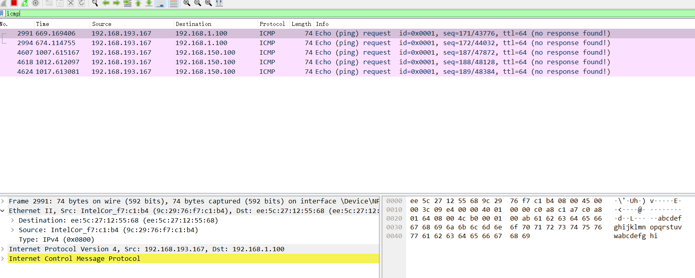
再次 ping www.cqjtu.edu.cn （或者本子网外的主机都可以），同时用 Wireshark 抓这些包（可 icmp 过滤），记录一下发出帧的目的 MAC 地址以及返回帧的源 MAC 地址又是多少？这个 MAC 地址又是谁的？
问题：通过以上的实验，你会发现： 1、访问本子网的计算机时，目的 MAC 就是该主机的 2、访问非本子网的计算机时，目的 MAC 是网关的 请问原因是什么？
主要是了解了在ping（连接）本子网下的主机和不在本子网的主机的目的mac和源mac地址的判断。本子网下就直接主机对主机，外网就是主机对网关。
1.为防止干扰，先使用 arp -d * 命令清空 arp 缓存
这里遇到了与之前相同的情况就是需要提升权限
ping 你旁边的计算机（同一子网），同时用 Wireshark 抓这些包（可 arp 过滤），查看 ARP 请求的格式以及请求的内容，注意观察该请求的目的 MAC 地址是什么。再查看一下该请求的回应，注意观察该回应的源 MAC 和目的 MAC 地址是什么。
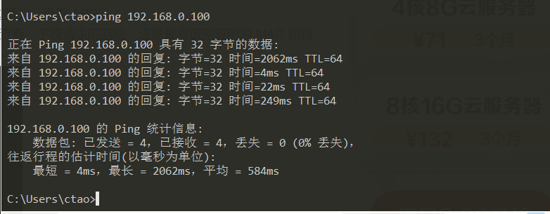 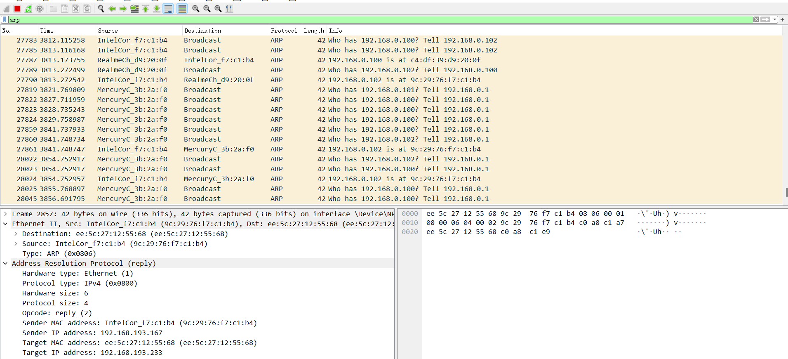
目的mac：9c:29:76:f7:c1:b4
源mac：ee:5c:27:12:55:68
再次使用 arp -d * 命令清空 arp 缓存
然后 ping qige.io （或者本子网外的主机都可以），同时用 Wireshark 抓这些包（可 arp 过滤）。查看这次 ARP请求的是什么，注意观察该请求是谁在回应。
问题:通过以上的实验，你应该会发现 1、ARP 请求都是使用广播方式发送的 2、如果访问的是本子网的 IP，那么 ARP 解析将直接得到该 IP 对应的 MAC；如果访问的非本子网的 IP， 那么 ARP 解析将得到网关的 MAC。请问为什么？
访问同一子网的计算机时，如果ARP缓存中有该IP，则直接得到对应的MAC，否则会进行广播，在子网中找到这个ip，获得对应的MAC地址 访问不同子网的计算机时，通过网关发出去，目的IP收到后，将网关的MAC返回去，ARP解析就会得到网关的MAC。
使用 Wireshark 任意进行抓包（可用 ip 过滤），熟悉 IP包的结构，如：版本、头部长度、总长度、TTL、协议类型等字段。
首部长度 占4位，可表示的最大十进制数值是15，总长度：首部和数据之和的长度，单位为字节。总长度字段为16位，因此数据报的最大长度为2^16-1=65535字节。 TTL：生存时间（跳转节点数量表示） 协议 占8位 源地址 占32位 目的地址 占32位
问题：为提高效率，我们应该让 IP 的头部尽可能的精简。但在如此珍贵的 IP 头部你会发现既有头部长度字段，也有总长度字段。请问为什么？
传输时的识别IP总长度，提高传输效率。
根据规定，一个 IP 包最大可以有 64K 字节。但由于 Ethernet 帧的限制，当 IP 包的数据超过1500 字节时就会被发送方的数据链路层分段，然后在接收方的网络层重组。 缺省的，ping 命令只会向对方发送 32个字节的数据。我们可以使用 ping 202.202.240.16 -l 2000 命令指定要发送的数据长度。此时使用 Wireshark抓包（用 ip.addr == 202.202.240.16 进行过滤），了解 IP 包如何进行分段，如：分段标志、偏移量以及每个包的大小等
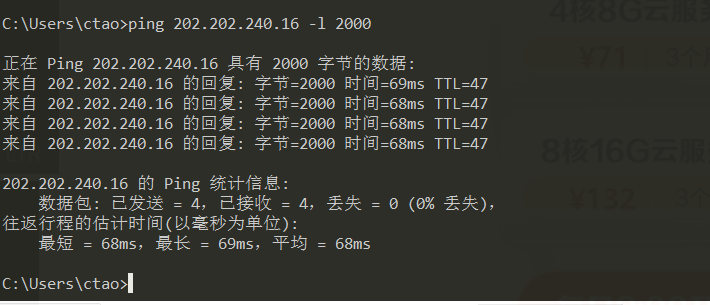

问题：分段与重组是一个耗费资源的操作，特别是当分段由传送路径上的节点即路由器来完成的时候，所以 IPv6 已经不允许分段了。那么 IPv6 中，如果路由器遇到了一个大数据包该怎么办？
转发到支持该数据传输的路由上或者丢弃该数据包。
在 IP 包头中有一个 TTL 字段用来限定该包可以在 Internet上传输多少跳（hops），一般该值设置为 64、128等。 在验证性实验部分我们使用了 tracert 命令进行路由追踪。其原理是主动设置 IP 包的 TTL 值，从 1 开始逐渐增加，直至到达最终目的主机。 请使用 tracert www.baidu.com 命令进行追踪，此时使用 Wireshark 抓包（用 icmp 过滤），分析每个发送包的 TTL 是如何进行改变的，从而理解路由追踪原理。
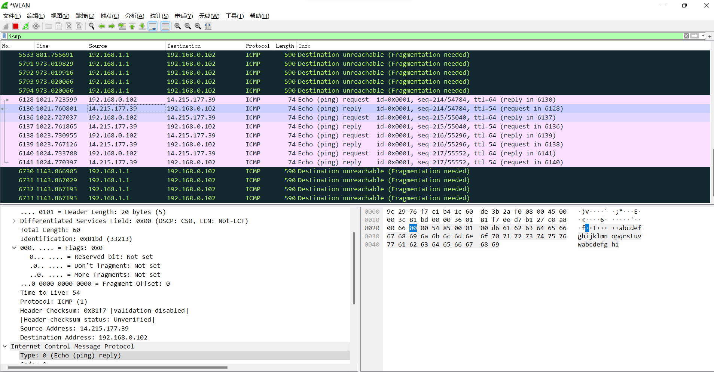
Tracert 首先发送TTL=1的数据包，然后每次发送会将TTL +1，直到目标响应或 TTL 达到最大值。
问题：在 IPv4 中，TTL 虽然定义为生命期即 Time To Live，但现实中我们都以跳数/节点数进行设置。如果你收到一个包，其 TTL 的值为 50，那么可以推断这个包从源点到你之间有多少跳？
接近50的2的阶次的数是64，所以有：64-54=10 跳
用 Wireshark 任意抓包（可用 tcp 过滤），熟悉 TCP 段的结构，如：源端口、目的端口、序列号、确认号、各种标志位等字段。
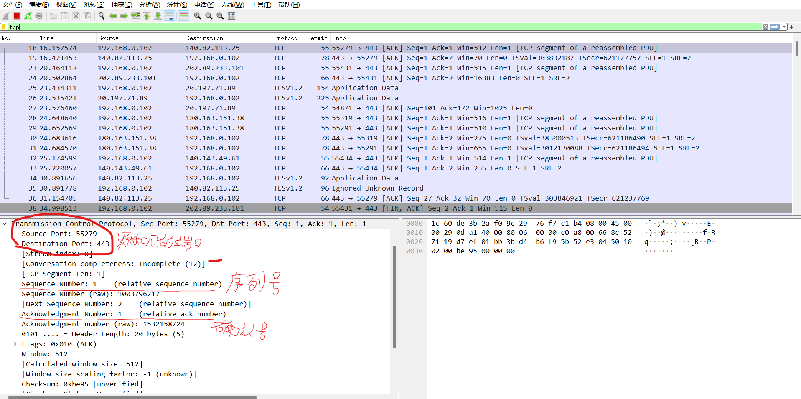
用 Wireshark 任意抓包（可用 udp 过滤），熟悉 UDP 段的结构，如：源端口、目的端口、长度等。
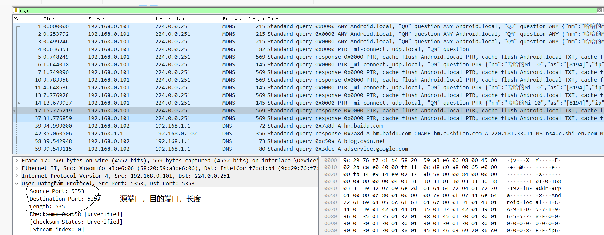
问题： 由上大家可以看到 UDP 的头部比 TCP 简单得多，但两者都有源和目的端口号。请问源和目的端口号用来干什么？
源端口是发送数据的端口，目的端口是对方主机接收数据的端口
打开浏览器访问 qige.io 网站，用 Wireshark 抓包（可用 tcp 过滤后再使用加上 Follow TCP Stream），不要立即停止 Wireshark 捕获，待页面显示完毕后再多等一段时间使得能够捕获释放连接的包。
请在你捕获的包中找到三次握手建立连接的包，并说明为何它们是用于建立连接的，有什么特征。
第一次握手，SYN为0，ACK为1
第二次握手，SYN为0，ACK为1
第三次握手，SYN为1，ACK为1
请在你捕获的包中找到四次挥手释放连接的包，并说明为何它们是用于释放连接的，有什么特征。
第一次握手，FIN为0，ACK为0
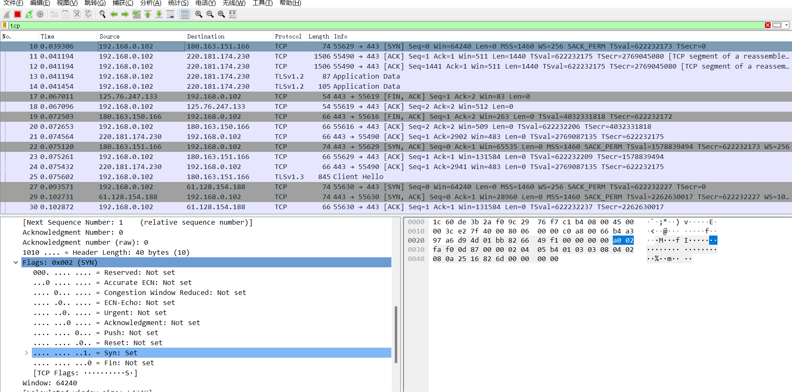
第二次握手，FIN为0，ACK为1
第三次握手，FIN为0，ACK为1
第三次握手，FIN为0，ACK为1
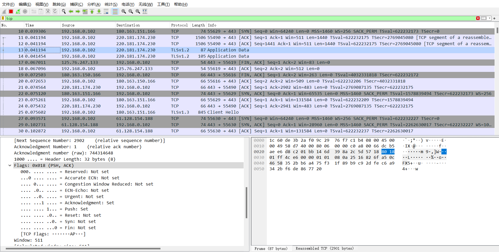
问题一：去掉 Follow TCP Stream，即不跟踪一个 TCP 流，你可能会看到访问 qige.io 时我们建立的连接有多个。请思考为什么会有多个连接？作用是什么？
短连接，一旦数据发送完成后，就会断开连接。断开连接后，页面已经缓存下来。需要重新进行发送数据的话，就要再次进行连接。实现多个用户进行访问，对业务频率不高的场合，节省通道的使用，不让其长期占用通道。
问题二：我们上面提到了释放连接需要四次挥手，有时你可能会抓到只有三次挥手。原因是什么？
第二次挥手的条件是服务端还有未完成的数据没有发送才进行第二次挥手，如果他发送已经完毕了，就直接第三步发出关闭连接的请求。
应用层的协议非常的多，我们只对 DNS 和 HTTP 进行相关的分析。
先使用 ipconfig /flushdns 命令清除缓存，再使用 nslookup qige.io 命令进行解析，同时用 Wireshark 任意抓包（可用 dns 过滤）。
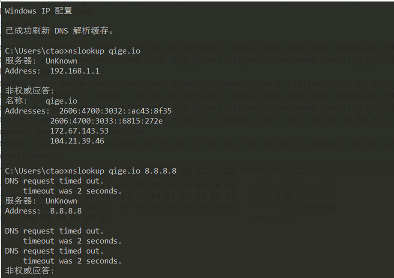 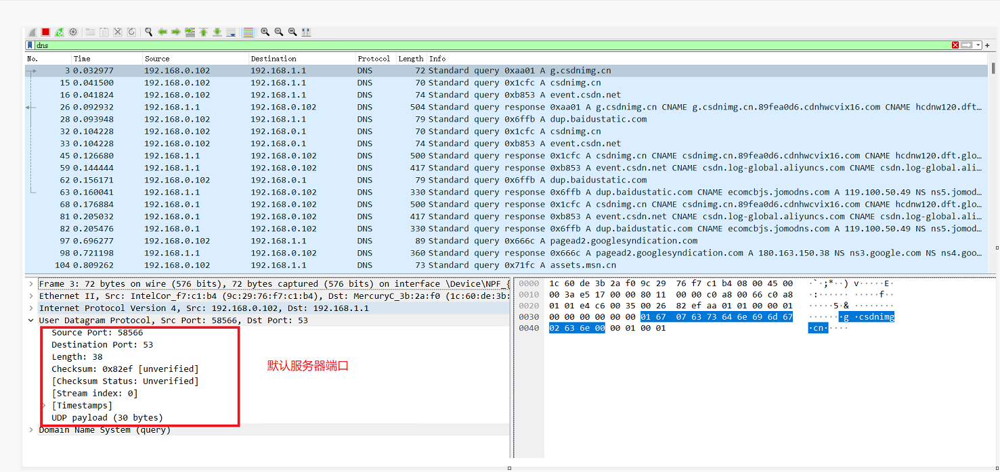
你应该可以看到当前计算机使用 UDP，向默认的 DNS 服务器的 53 号端口发出了查询请求，而 DNS 服务器的 53 号端口返回了结果。
可了解一下 DNS 查询和应答的相关字段的含义
1.QR：查询/应答标志。0表示这是一个查询报文，1表示这是一个应答报文 2.opcode，定义查询和应答的类型。0表示标准查询，1表示反向查询（由IP地址获得主机域名），2表示请求服务器状态 3.AA，授权应答标志，仅由应答报文使用。1表示域名服务器是授权服务器 4.TC，截断标志，仅当DNS报文使用UDP服务时使用。因为UDP数据报有长度限制，所以过长的DNS报文将被截断。1表示DNS报文超过512字节，并被截断 5.RD，递归查询标志。1表示执行递归查询，即如果目标DNS服务器无法解析某个主机名，则它将向其他DNS服务器继续查询，如此递归，直到获得结果并把该结果返回给客户端。0表示执行迭代查询，即如果目标DNS服务器无法解析某个主机名，则它将自己知道的其他DNS服务器的IP地址返回给客户端，以供客户端参考 6.RA，允许递归标志。仅由应答报文使用，1表示DNS服务器支持递归查询 7.zero，这3位未用，必须设置为0 8.rcode，4位返回码，表示应答的状态。常用值有0（无错误）和3（域名不存在）清除缓存
问题：你可能会发现对同一个站点，我们发出的 DNS 解析请求不止一个，思考一下是什么原因？
访问的网址虽然只是一个域名，但是会有多个台服务器主机，域名解析服务器可能有很多个，所以会同时向几个域名解析服务器发出请求。
打开浏览器访问 qige.io 网站，用 Wireshark 抓包（可用http 过滤再加上 Follow TCP Stream），不要立即停止 Wireshark 捕获，待页面显示完毕后再多等一段时间以将释放连接的包捕获。
请在你捕获的包中找到 HTTP 请求包，查看请求使用的什么命令，如：GET, POST。并仔细了解请求的头部有哪些字段及其意义。
请求类型为:GET
Accept：告诉服务器客户端浏览器这边可以出里什么数据；
Accept-Encodeing：gzip 告诉服务器我能支持什么样的压缩格式
accept-language：告诉服务器浏览器支持的语言
Cache-control：告诉服务器是否缓存
Connection:keep-alive： 告诉服务器当前保持活跃（与服务器处于链接状态）
Host：远程服务器的域名
User-agent：客户端的一些信息，浏览器信息 版本
referer：当前页面上一个页面地址。一般用于服务器判断是否为同一个域名下的请求
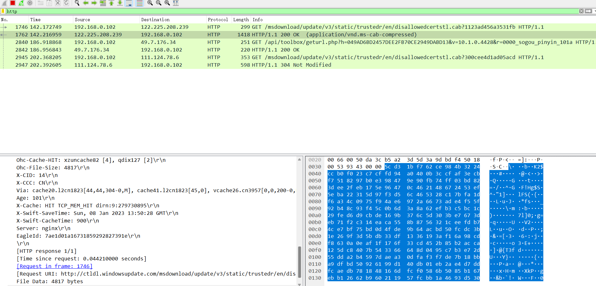
请在你捕获的包中找到 HTTP 应答包，查看应答的代码是什么，如：200, 304, 404 等。并仔细了解应答的头部有哪些字段及其意义。
200：交易成功；
304：客户端已经执行了GET，但文件未变化；
404：没有发现文件、查询或URl；
问题：刷新一次 qige.io 网站的页面同时进行抓包，你会发现不少的 304 代码的应答，这是所请求的对象没有更改的意思，让浏览器使用本地缓存的内容即可。那么服务器为什么会回答 304 应答而不是常见的 200 应答？
304表示可以直接在缓存区获取到需要的内容，不需要服务器再次回复对应的内容，减少服务器的一些工作，减小开销。如果采用200应答就是要完全的将内容发送给客服端，会增加服务器的一些开销。